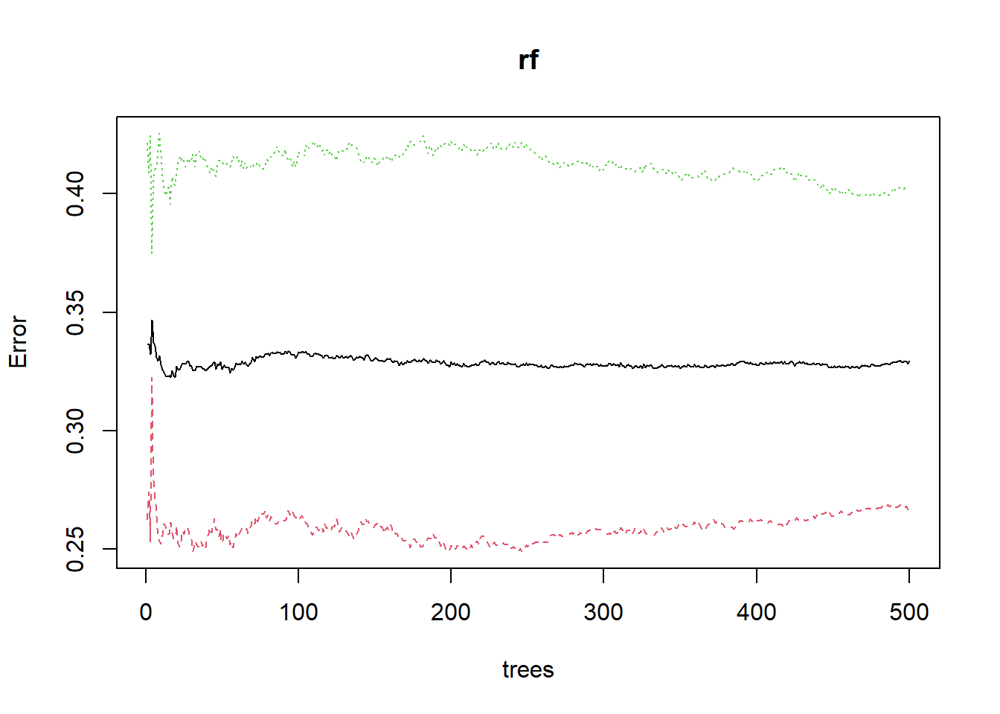
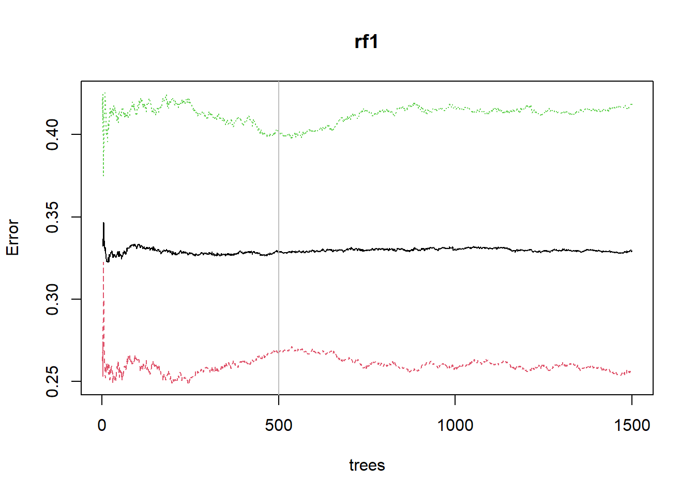
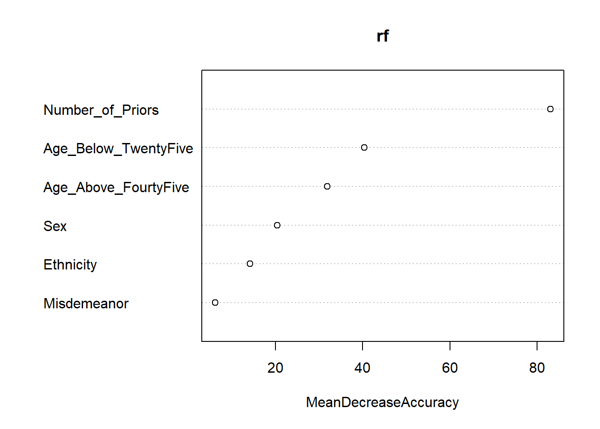

6 Random forest
I dette kapittelt skal vi bruke følgende pakker:
Random forest bruker klassifikasjonstrær og bagging som byggestener. I prinsippet er det “bagged trees”, men i stedet for å bagge samme type trær, så gjøres det en endring i hvert tre.
6.1 Eksempel
Leser inn Compas-dataene.
Code
compas <- readRDS("../data/compas.rds")
glimpse(compas)Rows: 6,172
Columns: 7
$ Two_yr_Recidivism <fct> 0, 1, 1, 0, 1, 0, 0, 0, 1, 0, 0, 1, 1, 0, 0, 1, 1…
$ Number_of_Priors <int> 0, 0, 4, 0, 14, 3, 0, 0, 3, 0, 0, 1, 7, 0, 3, 6, …
$ Age_Above_FourtyFive <fct> 1, 0, 0, 0, 0, 0, 0, 0, 0, 0, 0, 1, 0, 0, 0, 0, 0…
$ Age_Below_TwentyFive <fct> 0, 0, 1, 0, 0, 0, 0, 0, 1, 0, 0, 0, 0, 0, 0, 0, 0…
$ Misdemeanor <fct> 0, 0, 0, 1, 0, 0, 1, 0, 1, 1, 0, 0, 0, 1, 0, 0, 0…
$ Ethnicity <fct> Other, African_American, African_American, Other,…
$ Sex <fct> Male, Male, Male, Male, Male, Male, Female, Male,…Estimerer random forest med alle variable
Code
set.seed(4356)
rf <- randomForest(Two_yr_Recidivism ~ . ,
data = compas)
rf
Call:
randomForest(formula = Two_yr_Recidivism ~ ., data = compas)
Type of random forest: classification
Number of trees: 500
No. of variables tried at each split: 2
OOB estimate of error rate: 32.94%
Confusion matrix:
0 1 class.error
0 2462 901 0.2679156
1 1132 1677 0.4029904Følgende plot gir en oversikt over feilrater for random forest etter hvor mange trær. Det siste tallet til høyre i plottet er de feilratene som vises i output fra randomForest som vist over. Den svarte linjen er altså den totale feilraten, den grønne er falske positive, og den røde er falske negative. I utgangspunktet bruker random forest 500 trær (slik den er implementert i R). Dette plottet viser når resultatene stabiliserer seg. Kort sagt: Hvis linjene er ganske stabile mot til høyre i plottet har man nok trær. Hvis det har stabilisert seg før kunne man forsåvidt klart seg med færre trær. Hvis grafen er ganske humpete mot høyre i plottet, så kan man øke antall trær og se om det bedrer seg.
Code
plot(rf)
Predikerer på samme datasett
Code
compas_p <- compas %>%
mutate(pred_rf = predict(rf))Lager enkel krysstabell med predikert mot observert (dvs confusion matrix)
Code
table(compas_p$pred_rf, compas_p$Two_yr_Recidivism)
0 1
0 2462 1132
1 901 1677Lager bedre confusion matrix med alle øvrige utregninger. NB! Husk å presisere hva som er positiv verdi for at tallene skal blir riktig vei.
Code
confusionMatrix(compas_p$pred_rf,
compas_p$Two_yr_Recidivism, positive="1")Confusion Matrix and Statistics
Reference
Prediction 0 1
0 2462 1132
1 901 1677
Accuracy : 0.6706
95% CI : (0.6587, 0.6823)
No Information Rate : 0.5449
P-Value [Acc > NIR] : < 2.2e-16
Kappa : 0.3313
Mcnemar's Test P-Value : 3.378e-07
Sensitivity : 0.5970
Specificity : 0.7321
Pos Pred Value : 0.6505
Neg Pred Value : 0.6850
Prevalence : 0.4551
Detection Rate : 0.2717
Detection Prevalence : 0.4177
Balanced Accuracy : 0.6645
'Positive' Class : 1
Estimerer på nytt og øker antall trær og lager nytt plot. Her er det lagt inn en linje ved 500 trær for å markere tilsvarende resultat som ovenfor. Merk at det endelige resultatet endrer seg noe og mer stabilt mot slutten enn før, men kanskje ikke veldig vesentlig bedre. Merk at vi ikke kan forvente at linjene blir helt flate, og bedring i den ene feilraten går gjerne på bekostning av den andre.
Code
set.seed(4356)
rf1 <- randomForest(Two_yr_Recidivism ~ . ,
ntree = 1500,
data = compas)
plot(rf1)
abline(v=500, col = "gray")
Vi kan justere resultatet med å endre antall variable som tas med i hver split (i hvert tre). I forrige eksempel valgte funksjonen å bruke kun to variable, men det kan settes til f.eks. fire. Merk at det er et poeng at det ikke skal være så mange variable i hver split! Dette endrer normalt ikke resultatene veldig mye.
Code
set.seed(4356)
rf2 <- randomForest(Two_yr_Recidivism ~ . ,
mtry=4,
data = compas)
rf2
Call:
randomForest(formula = Two_yr_Recidivism ~ ., data = compas, mtry = 4)
Type of random forest: classification
Number of trees: 500
No. of variables tried at each split: 4
OOB estimate of error rate: 34.36%
Confusion matrix:
0 1 class.error
0 2608 755 0.2245019
1 1366 1443 0.48629416.1.1 Variable importance
For å få ut variable importance må dette settes i estimeringen med importance = TRUE. Det tar nå litt lengre tid å estimere, så med store datasett bør du vente med dette til du ellers er fornøyd med modellen.
Code
set.seed(4356)
rf <- randomForest(Two_yr_Recidivism ~ . ,
importance = TRUE,
data = compas)
rf
Call:
randomForest(formula = Two_yr_Recidivism ~ ., data = compas, importance = TRUE)
Type of random forest: classification
Number of trees: 500
No. of variables tried at each split: 2
OOB estimate of error rate: 32.42%
Confusion matrix:
0 1 class.error
0 2538 825 0.2453167
1 1176 1633 0.4186543Vi kan da plotte variable importance plot. Set type = 1 for at det skal vise gjennomsnittlig reduksjon i accuracy fremfor gini-koeffisienten. Endring i accuracy er lettest tolkbart og er oftest mest meningsfult.
Code
varImpPlot(rf, type = 1)
Her er det altså antall tidligere dommer som har størst betydning for prediksjon av tilbakefall, etterfulgt av alder og kjønn, og til sist om lovbruddet var en forseelse eller ikke.1
6.1.2 Partial dependence
Her må du velge hvilken variabel du ønsker å se på. Det er oftest de “viktigste variablene” fra variable importanc som er mest relevante å se på.
Code
partialPlot(rf, pred.data = compas,
x.var = Number_of_Priors,
which.class = "1")6.2 Tuning av random forest
Det som faktisk endrer resultatene en god del er sampling prosedyren, altså hvor mange observasjoner som trekkes til å bygge hvert tre. I utgangspunktet trekkes 70% av hele utvalget. Men ved å bruke argumentet sampsize = ... kan vi angi en annen andel. Hvis vi angir to tall er det antallet som trekkes fra hver kategori i utfallsvariabelen. Vi kan altså angi hvor mange som trekkes av de med og uten tilbakefall, men disse tallene bør ikke settes større enn 70% av hver kategori. I disse dataene er det 2809 med tilbakefall og 3364 uten tilbakefall. Vi kan da velge å trekke maks 1900 fra gruppen med tilbakefall.
Hensikten med å gjøre dette er at hvis det er et mindretall som har tilbakefall, så blir hvert tre bygget med mer informasjon om ikke-residivistene enn residivistene. Hvis vi vekter opp residivistene, så får disse større inflytelse på hvert tre. Dermed vil dette også påvirke resultatet. Det er imidlertid vanskelig å vite helt sikkert hvordan det vil slå ut, så man må prøve seg litt frem. Noen ganger vil man veie gruppene likt, andre ganger ulikt. Her er et eksempel der de veies likt:
Code
set.seed(4356)
rf3 <- randomForest(Two_yr_Recidivism ~ . ,
sampsize = c(1900, 1900),
data = compas)
rf3
Call:
randomForest(formula = Two_yr_Recidivism ~ ., data = compas, sampsize = c(1900, 1900))
Type of random forest: classification
Number of trees: 500
No. of variables tried at each split: 2
OOB estimate of error rate: 32.73%
Confusion matrix:
0 1 class.error
0 2321 1042 0.3098424
1 978 1831 0.3481666Her er et eksempel der de veies ulikt:
Code
set.seed(4356)
rf3 <- randomForest(Two_yr_Recidivism ~ . ,
sampsize = c(1000, 1900),
data = compas)
rf3
Call:
randomForest(formula = Two_yr_Recidivism ~ ., data = compas, sampsize = c(1000, 1900))
Type of random forest: classification
Number of trees: 500
No. of variables tried at each split: 2
OOB estimate of error rate: 41.15%
Confusion matrix:
0 1 class.error
0 1170 2193 0.6520963
1 347 2462 0.1235315Det viktige nå er at feilratene for falske positive og falske negative blir vesentlig forskjellig! Det betyr at ved hvordan vi estimerer modellen kan vi legge sterke føringer på resultatet. Vi bør derfor ta stilling til på forhånd hvilke feilrater vi er villig til å akseptere - og hvorvidt de to typer feil er like ille eller ikke. Det er dette Berk (2016) kaller asymetriske kostnader og må vurderes i henhold til konsekvenser av hva prediksjonen skal brukes til.
Predikere for nye data:
Code
compas_p <- compas %>%
mutate(pred_rf = predict(rf, newdata=compas))Confusion matrix:
Code
confusionMatrix(compas_p$pred_rf, compas_p$Two_yr_Recidivism, positive="1")Confusion Matrix and Statistics
Reference
Prediction 0 1
0 2595 1156
1 768 1653
Accuracy : 0.6883
95% CI : (0.6765, 0.6998)
No Information Rate : 0.5449
P-Value [Acc > NIR] : < 2.2e-16
Kappa : 0.3642
Mcnemar's Test P-Value : < 2.2e-16
Sensitivity : 0.5885
Specificity : 0.7716
Pos Pred Value : 0.6828
Neg Pred Value : 0.6918
Prevalence : 0.4551
Detection Rate : 0.2678
Detection Prevalence : 0.3923
Balanced Accuracy : 0.6800
'Positive' Class : 1
6.3 Oppgaver
Exercise 6.1 Bruk datasettet credit som i forrige oppgave.
- Bruk random forest til å gjøre en tilsvarende klassifisering som du gjorde med klassifikasjonstre. Bruk default instillinger i randomForest().
- Bruk predict() til å klassifisere
- Lag en confusion matrix med table() og gjenta med confusionMatrix()
- Gjør en vurdering av resultatet og sammenlign med resultat fra klassifikasjonstre
Exercise 6.2 Gjenta oppgave 1, men se om du kan justere modellen til et mer tilfredsstillende resultat. Gjør deg først opp en mening om hvordan du vil at confusion matrix skal se ut (f.eks. cost-ratio) og prøv å nærme deg dette. Bruk parameterne sampsize, mtry og ntree.
Exercise 6.3 Tolk random forest a) Hvilke variable har størst prediktiv verdi? Lag et variable importance plot og gi en tolkning. a) Velg noen av variablene (gjerne f.eks. de med størst prediktiv verdi) og lag partial dependence plot.
Exercise 6.4 Datafilen credit_kunder.csv inneholder data om to lånesøkere: Ola Normann og Kari Hansen. Skal banken gi dem lån? Bruk foretrukne modell fra forrige oppgave. Hvis du virkelig vil at begge skal få lån kan du kanskje justere modellen? Legge til/fjerne variable fra formelen og justere tuning parametrene. Prøv deg frem.
I norsk straffelov var det et skille mellom forseelse og forbrytelse frem til 2015, og dette skillet finnes ikke lengre i norsk straffelov. Men med “forseelse” menes det jo i denne sammenheng de mindre alvorlige lovbruddene.↩︎